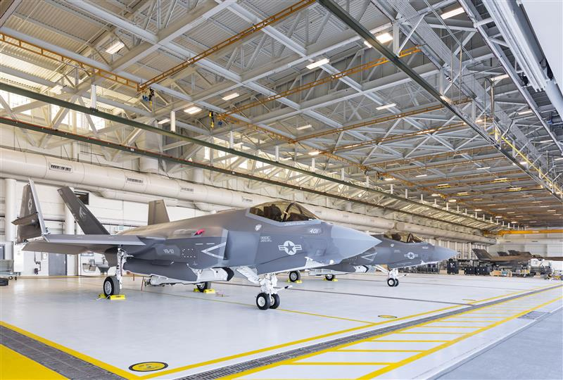

Part 1: The Autonomic Logistics Information System (ALIS)
Perhaps the most significant and costly software failure in the F-35 program was not code that flew, but code that stayed on the ground. The Autonomic Logistics Information System (ALIS) was envisioned as the "brain" of the entire F-35 fleet, a revolutionary system that would manage maintenance, diagnostics, supply chains, and mission planning globally.
The concept was ambitious: a pilot would land, and the jet would automatically "phone home" to ALIS, reporting its own health and ordering its own spare parts. In reality, ALIS became a logistical bottleneck that crippled the fleet.
A System That Didn't Trust Its Users
The core failure of ALIS was a combination of crippling bugs and a flawed design philosophy. Maintenance crews, the system's primary users, quickly grew to despise it.
- Constant False Positives: The system's diagnostic tools were overly sensitive, frequently reporting "critical faults" that did not exist. This grounded perfectly healthy aircraft, destroying mission readiness rates.
- Crippling Usability: ALIS was notoriously slow, with a non-intuitive interface. Simple tasks, like signing off on a repair, could take hours. Furthermore, the system required massive data transfers over slow, often insecure connections, making it impractical in a deployed environment.
- Data Corruption: Most critically, ALIS was prone to losing or corrupting vital maintenance data. This meant the "digital thread" for each multi-million dollar jet—its entire service history—was unreliable.

The Impact: Distrust and Workarounds
The failure of ALIS led to a culture of "workarounds." Maintenance chiefs, unable to trust the system, resorted to keeping separate, unofficial spreadsheets on insecure laptops just to track spare parts and aircraft status. They were forced to fight the software just to do their jobs.
The system was so fundamentally broken that in 2020, the Pentagon officially announced it would be scrapped entirely and replaced by a new, cloud-based system called ODIN. ALIS stands as a monumental example of project software failure, where underestimating software complexity led to a decade of delays and billions in wasted funding.